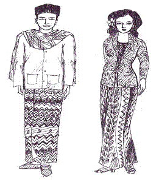

|
ประเทศมาเลเซีย

การแต่งกาย แตกต่างกันตามประเพณีนิยมของแต่ละเชื้อชาติ
ผู้หญิง นุ่งโสร่งปาเต๊ะสีสดมีลวดลายดอกดวงงาม สวมเสื้อ คอยูแขนยาวถึงข้อมือปล่อยชายเสื้อ ไว้นอกโสร่ง บางคนจะมีผ้าบาง ๆ คลุมศีรษะ คลุมไหล่ ชาวมาลายูชอบใช้เสื้อผ้า สีสดใสมีลวดลาย ใบไม้ดอกไม้โต ๆ สลับสีกัน ชาวจีนแต่งกายแบบจีนเรียกว่า “กี่เพา” หรือ “ฉ่งชำ” ทำด้วยผ้าเป็นดอกดวง ฉูดฉาด
ชาย นุ่งโสร่งเป็นตา และสวมเสื้อ แขนยาว บางคนสวมหมวก ใช้ผ้าโพกศีรษะ คนแก่มักมีผ้าห้อยไหล่ |